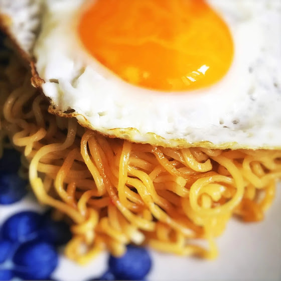

Indomie Recipe

Description
This chicken cutlet rice bowl is absolutely incredible. Love at first taste, like we had with this Instant Pot Japanese curry too! Crispy, rich, comforting, flavor packed, these ingredients all go together perfectly.
And even better if you choose to use homemade Japanese curry roux (this recipe is SUPER easy). But don't worry, even if you use store bought, this chicken katsu donburi is perfection.
Ingredients
- 1 package Indomie Mi Goreng noodles
- 1 dab butter
- 1 egg
Steps
- Heat up non stick pan (cast iron is best!) over low heat. Add butter. When butter melted break egg into pan. Cook around 2 mins until the whites are just set. Scoop egg out
- Boil a small pot of water over medium heat. Add in noodles and cook for 3 mins or until al dente. Strain out the water, then return noodles back to pot.
- Turn to low heat, add in powdered flavor packets, stir until completely mixed. Add in 2nd flavor packet and stir until completely mixed. Scoop out to serving bowl. Place sunny side up egg over noodles and it's ready to serve. Enjoy!
Back to home